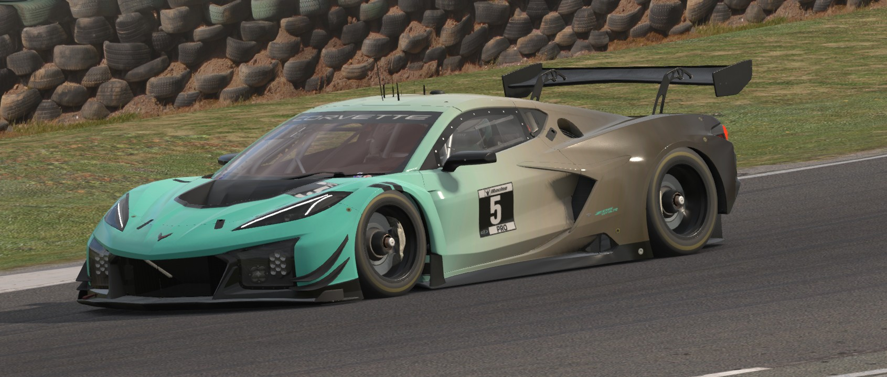

About New England Drive

I started New England Drive to share my experience with driving enthusiasts looking to get involved in sim racing weather they are new or looking for advice on hardward or software.
I began racing in 2006 after attending the Skip Barber Racing School. I progressed from competing in the Skip Barber Regional Series into the Skip Barber National Championship, sharing the grid with current pro drivers including Josef Newgarden, Jordan Taylor, and Conor Daly.
During my time with Skip Barber, a driver coach introduced me to iRacing in 2007 while the platform was still in beta. As real-world track time waned, I turned to full time sim racing to enjoy the benefits of racing virtually.
Real-world racing and decades long sim racing expertise form the foundation of New England Drive. I share that experience with enthusiasts seeking premium sim racing systems including hardware, consultation and coaching.